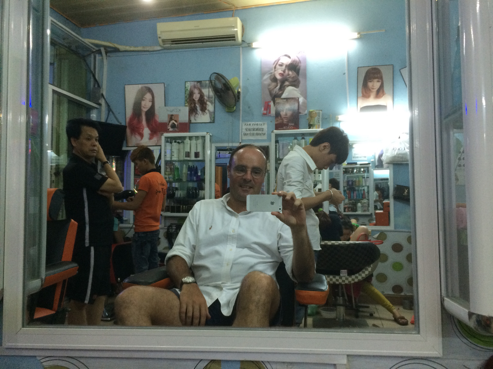
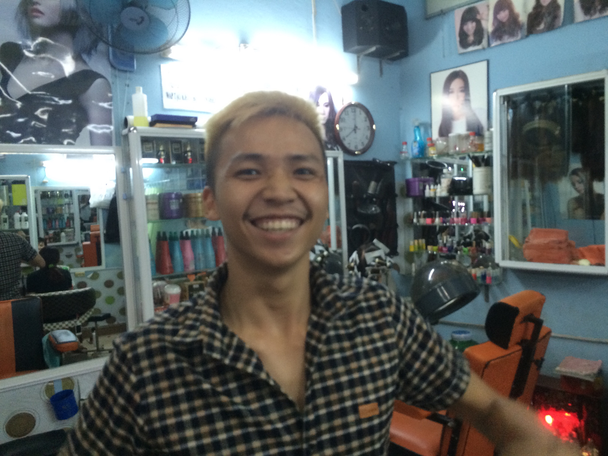
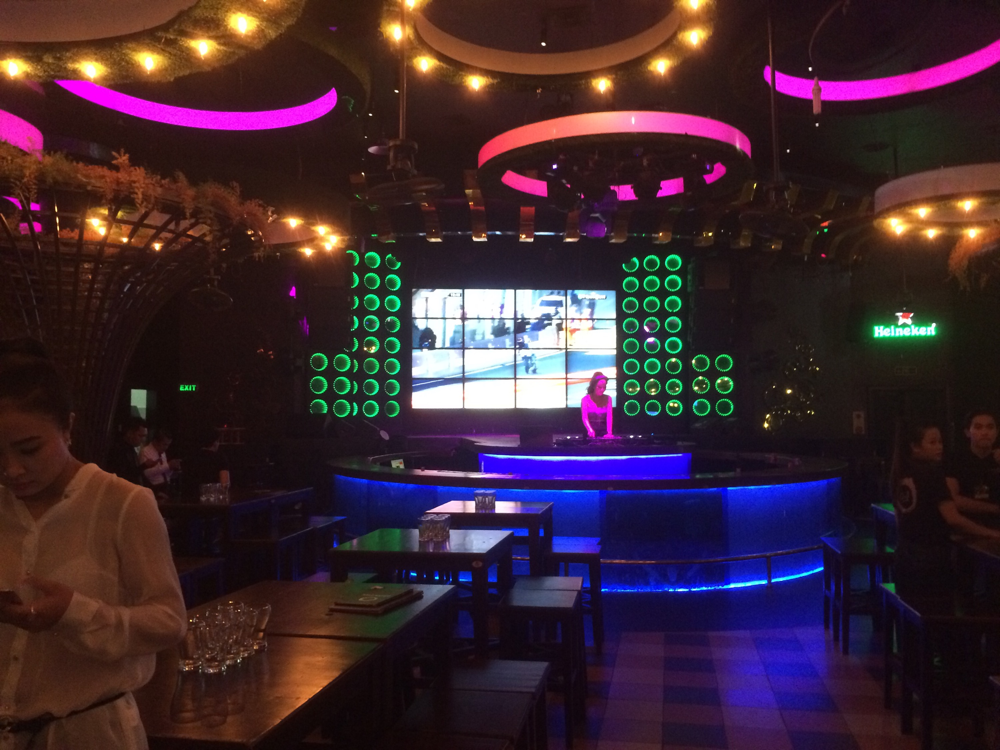
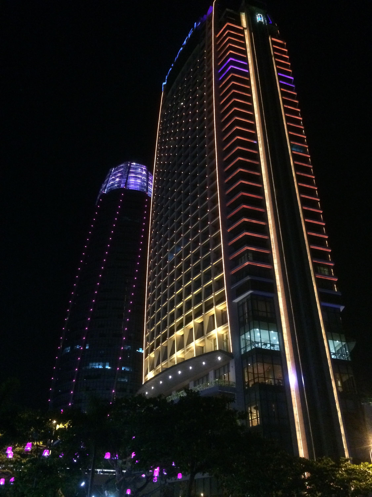

Vendredi soir à Da Nang
Ok, c’est vendredi soir, la partie travail acharné de mon séjour à Da Nang est en grande partie terminée – alors je pars pour une tournée des bars.
Dîner sur le pouce : nourriture de rue le long de la plage (Nadine, Doreen, Hamarz, vous connaissez l’endroit). Quoi de neuf : commander est devenu facile maintenant. Non pas que je parle un mot de vietnamien pertinent, mais je me suis habitué au fait que je ne le fais pas ;)
Il est alors environ 20 heures. Trop tôt pour les bars. Je décide donc qu'une coupe de cheveux s'impose...

Voici mon coiffeur un peu fou :

Ensuite, je prends une bière au Red Sky Bar.

Soit je suis trop tôt, soit le bar n’est plus à la mode : trop peu de monde et pas le bon public...
Ensuite, je dois rendre visite à mon amie San : c’est une charmante Vietnamienne qui fait la promotion de la bière San Miguel dans les bars de Da Nang. Et elle m’a envoyé sur Viber la photo de sa nouvelle tenue :

Alors mon vélo et moi nous dirigeons vers le Bamboo bar : un bar à Bach Dang où des Occidentaux plus âgés rencontrent des filles vietnamiennes et où chaque chaîne de sport a un écran. Je prends une San Miguel Light et regarde Federer gagner à Roland Garros.
Faire la tournée des bars signifie qu'il faut continuer à bouger. Prochaine étape : un événement dansant au bord de la rivière Han.

Pour ceux qui connaissent : comme le Lido ou le club de danse en bas du Hofbräu-Keller. Jouer avec des enfants et des familles vietnamiennes, ambiance très agréable.
Ensuite, je passe par un endroit avec un panneau indiquant qu'il s'agit d'un "Beer garden". Donc, je dois m'arrêter – cela signifie garer le vélo (comme dans chaque endroit ici).

Il s'avère qu'un beer garden vietnamien est un concept différent d'un allemand : c'est plus comme une discothèque où l'on sert aussi de la bière...

Rappelez-vous : les DJs dans les lieux branchés sont toujours des filles au Vietnam !
Le son de la discothèque est agréable. Alors pourquoi ne pas aller dans un endroit que je connais et qui a de la bonne musique (forte) ? Au sommet du Novotel se trouve le célèbre SkyBar.

Donc : garer le vélo, prendre l'ascenseur qui mène à l'étage #57 – « Désolé Monsieur, nous avons une politique stricte : pas de shorts ».

Pas de chance.
Je termine donc la soirée dans l'un de mes "standards", le Minsk Bar. Près de l'hôtel, très décontracté, musique reggae.

Mais comme c’est vendredi soir, la fin n’est pas encore la fin. De retour à l'hôtel, un de leurs Whiskey sours de plus :

Alors que je tape ceci, j’en ai bu 3 et il est passé 23 heures. Et demain je rencontre les gars du Java Developers Club local. Et avant cela, je prévois de nager et de courir sur la plage – donc : Va te coucher, Till !
Bien qu'il n'y ait pas de photos : j'ai rencontré environ 10 nouvelles personnes, 50/50 Vietnamiens et étrangers. C’est un pays super-communicatif !